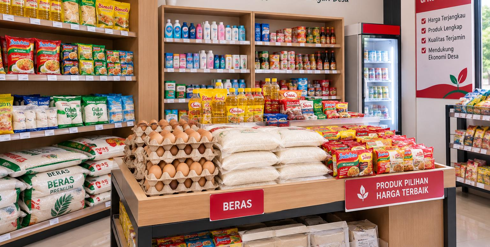
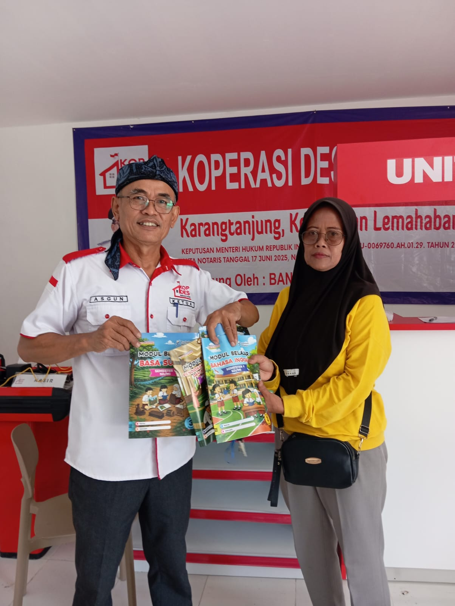
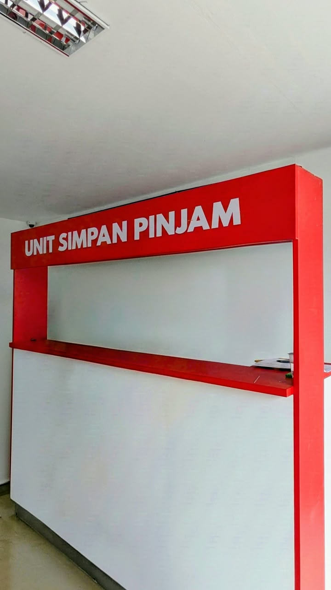
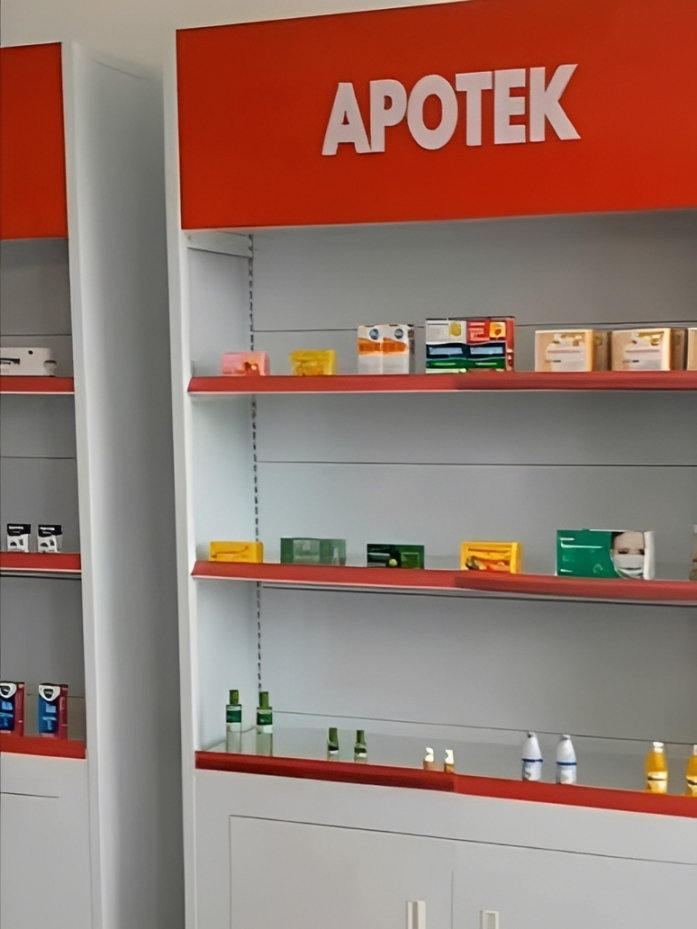
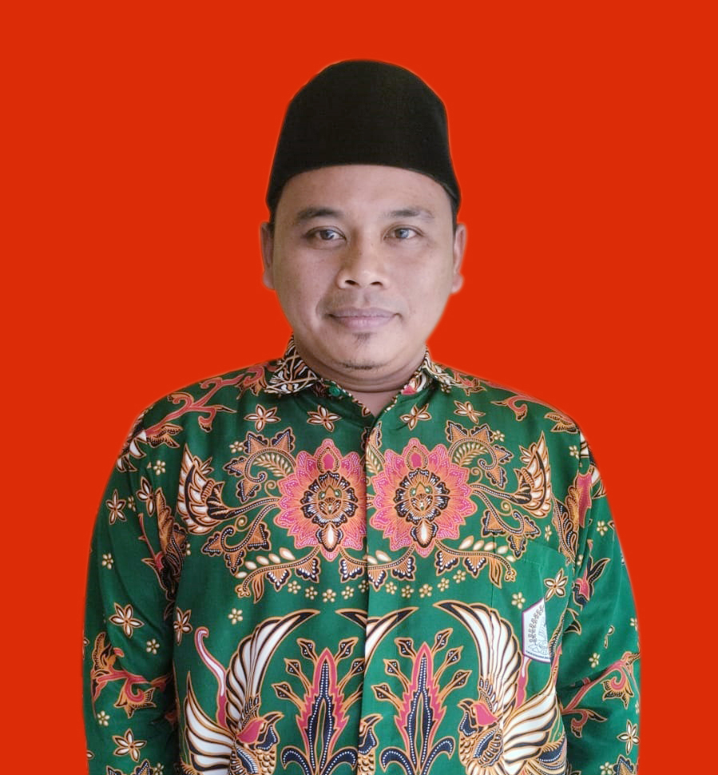
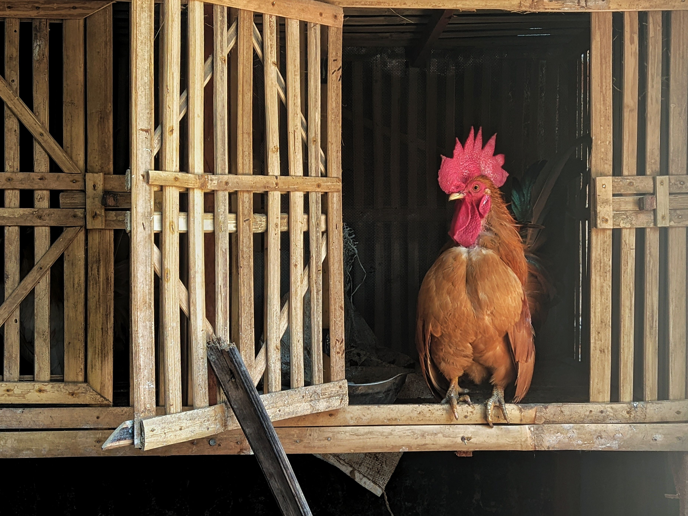
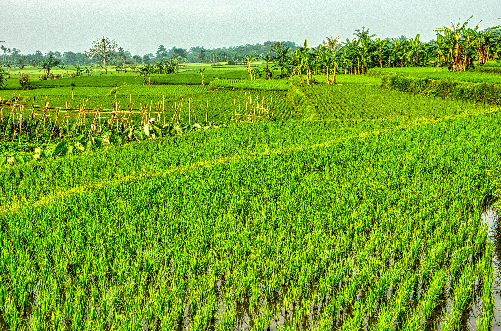
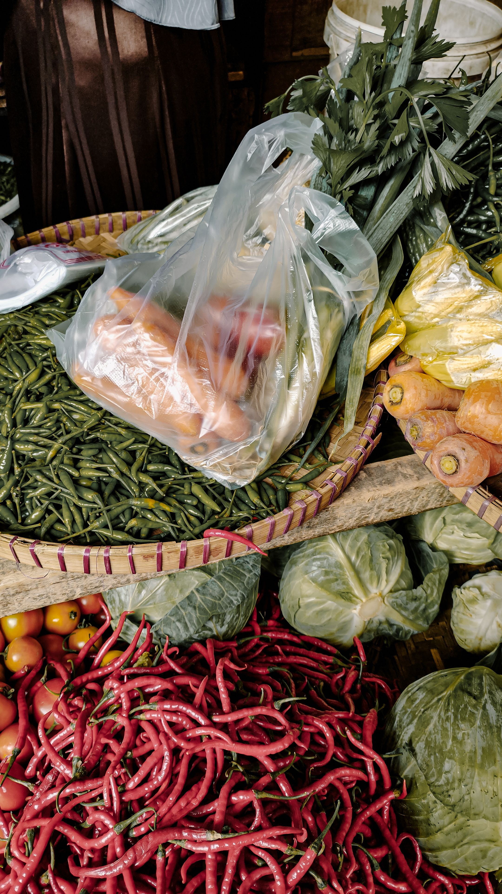
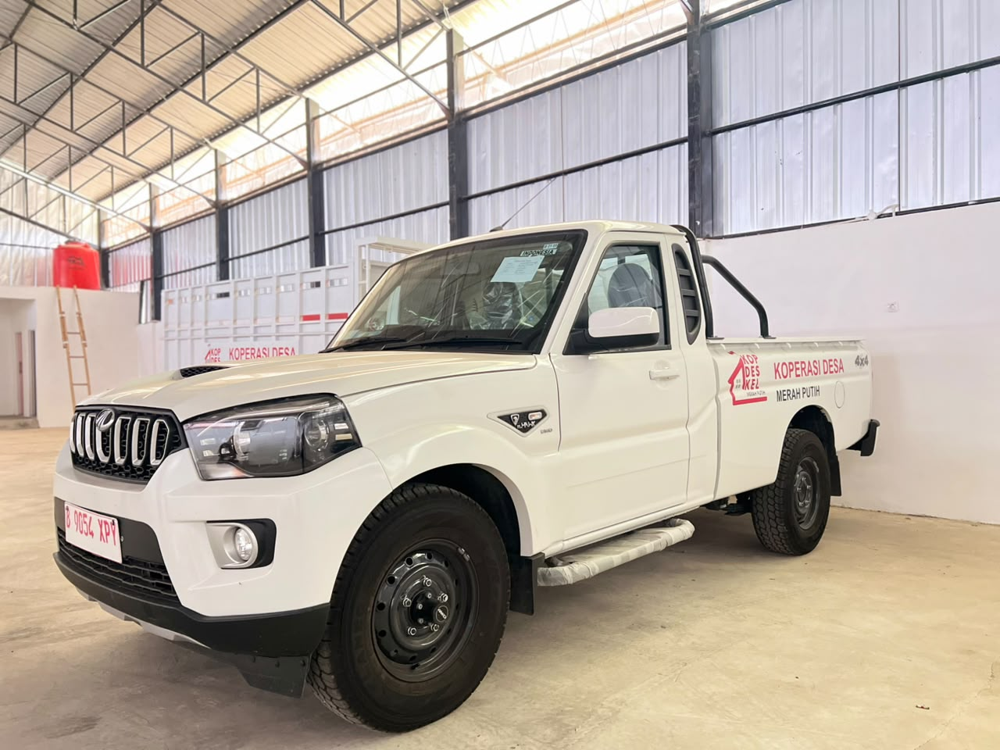

Perdagangan
Sembako
Kebutuhan pokok harian masyarakat dengan akses yang mudah dan harga yang kompetitif.
Tanyakan produk →Koperasi Desa Merah Putih Karangtanjung hadir sebagai wadah kolaborasi masyarakat untuk mendorong kemandirian ekonomi melalui kebutuhan pokok, pertanian, kesehatan, pembiayaan, dan pengembangan usaha masyarakat.




Kebutuhan pokok harian masyarakat dengan akses yang mudah dan harga yang kompetitif.
Tanyakan produk →
Mendukung petani memperoleh sarana produksi pertanian sesuai kebutuhan musim tanam.
Tanyakan stok →
Layanan pembiayaan anggota dengan tata kelola yang transparan dan sesuai ketentuan.
Konsultasi →
Akses kebutuhan farmasi masyarakat melalui unit layanan kesehatan koperasi.
Hubungi apotek →

Koperasi dapat membantu akses pakan, sarana produksi, pembiayaan, hingga pemasaran hasil ternak.

Pengadaan input pertanian dan pemasaran bersama membantu meningkatkan efisiensi.

Promosi, distribusi, pembiayaan, dan akses pasar dapat dikonsolidasikan melalui koperasi.

Aktivitas ekonomi lokal menciptakan perputaran nilai dan membuka peluang usaha baru.
Jl. Lapang bola Mandala Wadas, Desa Karangtanjung, Kecamatan Lemahabang, Kabupaten Karawang.